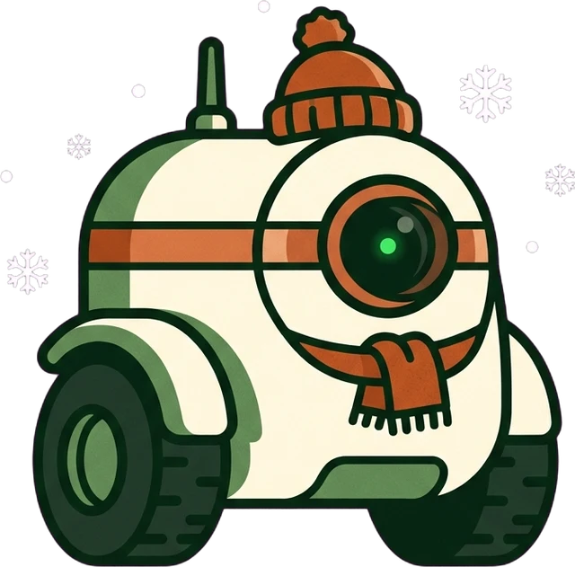

Accueil › Calendrier du gazon
Calendrier du gazon
Quoi faire ce mois-ci

En novembre
Fiche hivernage
Une page à imprimer et à accrocher dans le garage.
Maquette V2 · prix, notes et dates d’exemple · storyboard
Accueil › Calendrier du gazon
Quoi faire ce mois-ci

Une page à imprimer et à accrocher dans le garage.